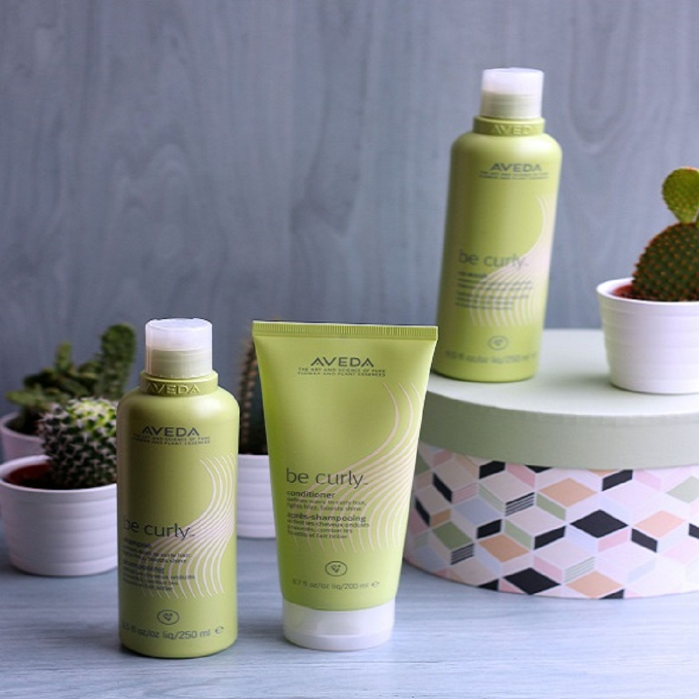
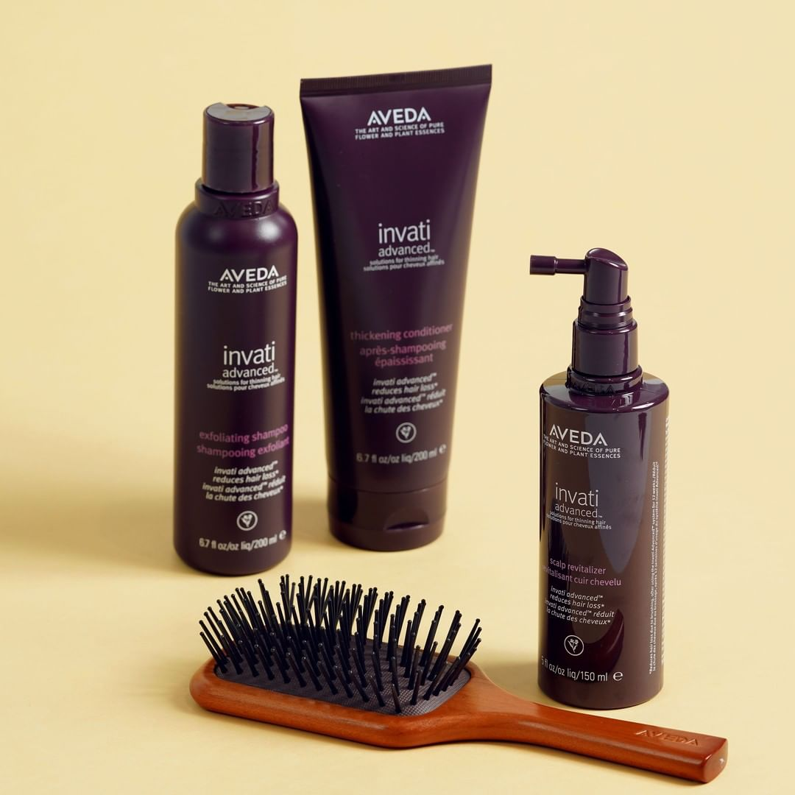
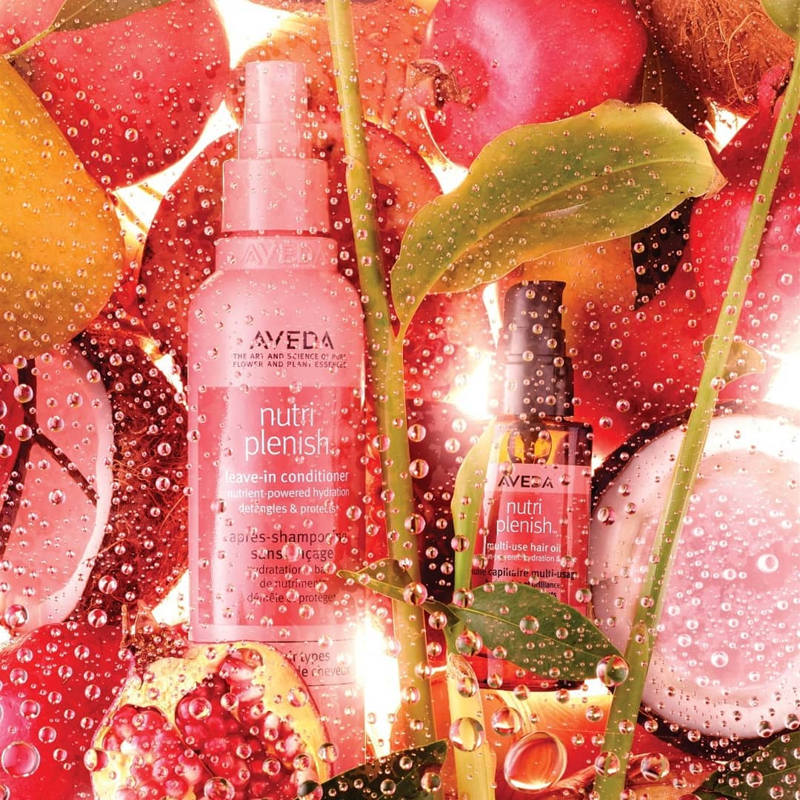
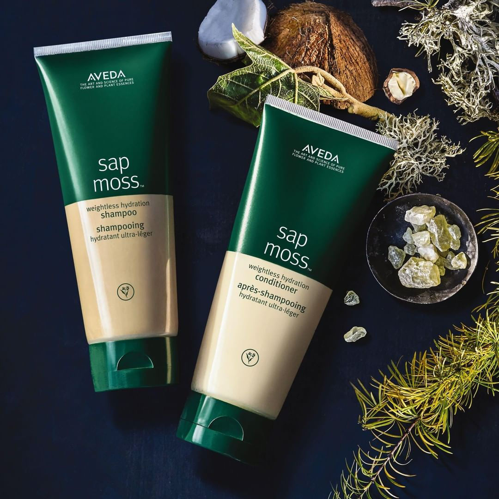
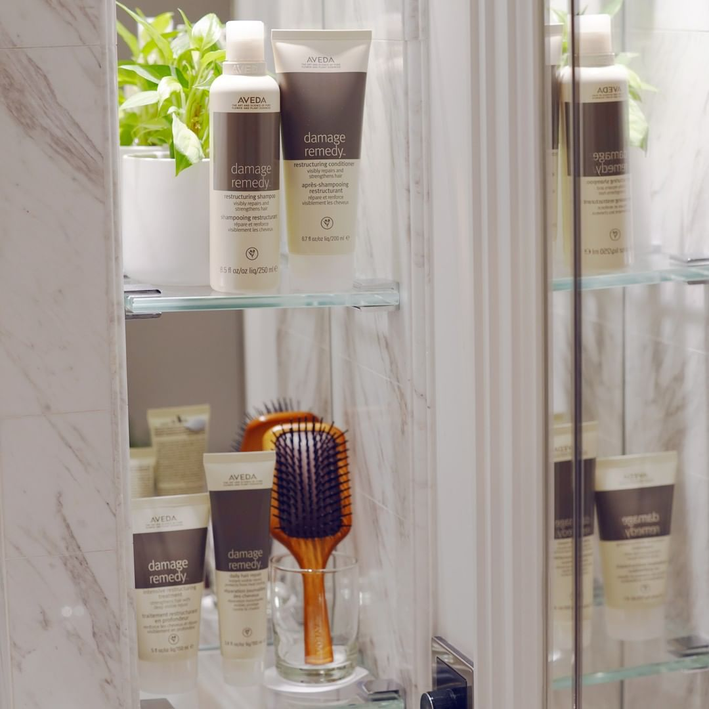
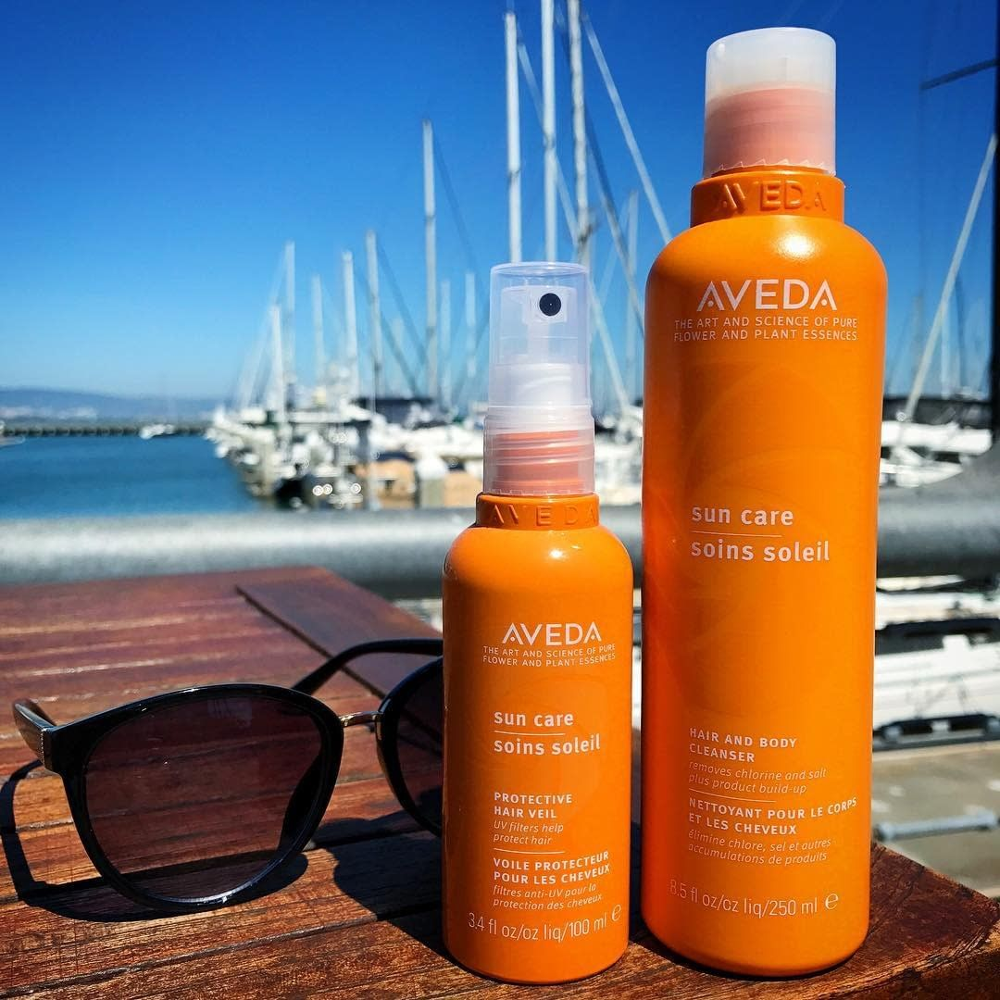

Linea "Be Curly"
Be Curly Shampoo
Una detersione delicata perfeziona i ricci, combatte il crespo e accentua la luminosita' dei capelli ricci e ondulati.
Be Curly Conditioner
Un balsamo per un uso quotidiano che perfeziona i ricci, combatte il crespo e accentua la lucentezza dei capelli ricci od ondulati.
Be Curly Curl Enhancer
Una lozione per intensificare i ricci, domare il crespo ed esaltare la luminosita'. La miscela di proteine di grano e aloe di derivazione biologica certificata si espande quando i capelli sono bagnati e si ritrae quando sono asciutti in modo da rendere piu' intensi ricci e onde. Tiene sotto controllo il crespo per tutto il giorno.
Be Curly Style-Prep
Trattamento pre -styling che aggiunge idratazione e definizione ai ricci e sigilla le cuticole, domando il crespo per tutto il giorno. Facilita lo styling dei ricci che durano cosi' piu' a lungo, lasciando al contempo i capelli morbidi. Esalta l'effetto di be curly curl enhancer.

Linea "Invati Advanced"
Invati Advanced Exfoliating Shampoo
Shampoo dall' effetto delicatamente esfoliante, deterge e rigenera il cuoio capelluto Aiuta a ridurre la caduta dei capelli per mantenerli piu' a lungo se utilizzato come parte del sistema a 3 step Invati Advanced, 4 donne su 5 dichiarano di sentire capelli piu' forti e piu' spessi, l'acido salicilico derivato da Wintergreen aiuta a rimuovere l'accumulo di sebo che ostruisce i pori.
Invati Advanced Thickening Conditioner
Infoltisce i capelli all'istante donando un effetto corposo che dura tutto il giorno l'alma di origine biologica certificata ispessisce all'istante gli amminoacidi di derivazione naturale essendo simili alla materia dei capelli li rinforzano dalle radici alle punte una leggera miscela di oli vegetali ammorbidisce i capelli risparmia ed evita gli sprechi di plastica acquistando il formato litro.
Invati Advanced Scalp Revitalizer
La formula con l'innovativa miscela di buccia di mandarino e poligono del Giappone supportano la naturale cheratina del capello, la miscela bio fermentata brevettata piu' la curcuma di origine biologica certificata rinvigoriscono il cuoio capelluto quando massaggiato.L'alma di origine biologica certificata ispessisce i capelli per volumizzarli istantaneamente dalla radice alle punte

Linea "Nutri Plenish"
Nutri Plenish Hydrating Shampoo Light Moisture
formula leggera che deterge delicatamente senza danneggiare i capelli,al 94% di derivazione naturale,con potenti super food,con olio di melograno biologico ricco di omega 5 nutre i capelli secchi,olio di cocco biologico certificato a basso peso molecolare infonde nei capelli vitamine e minerali.
Nutri Plenish Vitamin Leave in Conditioner Spray
Idrata istantaneamente, districa e protegge tutti i tipi di capelli. Protezione termica fino a 230^
Il filtro UV di derivazione naturale aiuta a proteggere i capelli dagli effetti dannosi del sole.
Lascia i capelli morbidi e pronti per lo styling.
Utilizzare su capelli bagnati o asciutti.

Linea "Sap Moss"
Sap Moss Weightless Hydration Conditioner
Conditioner senza siliconi, idrata i capelli senza appesantirli, districa istantaneamente e doma l'effetto crespo. Formulato con una miscela di muschio islandese, estratto di linfa di larice e olio di cocco. La tecnologia 'smart drone' permette alla formula di agire in modo mirato sulle aree piu' secche all'interno dei capelli.
Sap Moss Weightless Hydration Shampoo
Dona idratazione ai capelli grazie a questo shampoo senza siliconi, che idrata senza appesantire grazie alla miscela composta da muschio islandese ed estratto di linfa di larice. Deterge delicatamente la cute e aiuta a domare l'effetto crespo, lasciando i capelli morbidi e idratati.

Linea "Damage Remedy"
Damage Remedy Restructuring Shampoo
ll nostro shampoo per uso quotidiano aiuta a riparare i danni grazie alla proteina della quinoa e nutre i capelli dando loro nuova vita grazie alle proprieta' del cocco e del babassu.
Damage Remedy Intensive Restructuring Treatment
Il nostro trattamento settimanale intensivo penetra in profondita' per aiutare a riparare, sigillare e lisciare in modo uniforme anche i capelli piu' danneggiati. Con il potere degli oli vegetali e la proteina di quinoa, ristabilisce la salute, la setosita' e la brillantezza dei capelli.
Parte di un sistema ristrutturante a quattro fasi. Aiuta a rafforzare i capelli indeboliti da trattamenti chimici, styling a caldo e agenti atmosferici.
Damage Remedy Daily Hair Repair
Il nostro trattamento giornaliero leave-in ripara immediatamente i capelli, riducendo le rotture del 90% in appena 1 settimana aiuta a proteggere dallo styling a caldo, districa e aiuta a prevenire ulteriori danni.

Linea "Sun Care"
Sun Care Hair and Body Cleanser
Una formula salva colore che rimuove delicatamente e in modo efficace il cloro, il sale e gli accumuli di prodotto, aiutando al contempo a mantenere la giusta idratazione. Un fluido con chelatore derivato dal granturco che rimuove dalla pelle e dai capelli i minerali che si trovano nell'acqua clorata delle piscine, che sono causa di scolorimento
il babassu garantisce una pulizia profonda rimuovendo il cloro, il sale e gli accumuli di prodotto
Sun Care After-Sun Hair Masque
Una maschera in creama intensa che ristabilisce l'equilibro dei capelli esposti al sole, idrata e aiuta a difenderli contro i radicali liberi. La proteina di morikueTM aiuta a risanare i capelli indeboliti